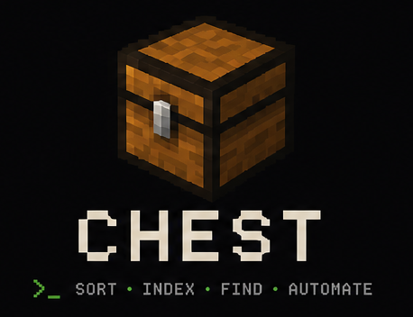

chest — a command-line chest for the files you actually have. Sort, search, watch, undo. Offline-first, reversible, plugin-extensible.

chest verb [target] [flags]
Top-level verb is one of: sort, search, watch, undo, history, index, stats, duplicates, analyze, man, preset, plugin, clean, version. Run chest man chest for the full grammar.
DESCRIPTIONCHEST is a Go CLI for organizing files into compartments. It is designed around three guarantees:
- 1. Reversible
- Every move is logged.
chest undoreverts the latest run;chest undo <id>reverts a specific one.--dry-runpreviews without touching anything. - 2. Local
- Metadata, storage stats, and SHA-256 hashes live in pure-Go SQLite at
~/.chest/index.db. No cloud, no telemetry, no phoning home. - 3. Concurrent
- Parallel directory traversal with
fastwalkand microsecond scoring borrowed fromfzf/src/algo. Walks 100k+ files across every core.
- sort -p <preset>
- Group files by type, size, format, or by a named preset (
downloads,media,developer,documents,photos). Combine with--rulefor one-off expressions like"type=image && size>5MB → RAW/". - search pattern
- Walk a tree and score filenames with
fzf-style fuzzy matching. Add-cto grep inside file contents,-eto filter by extension,-sby size,-jto emit JSON. - watch dir
- Listen to filesystem events with
fsnotifyand sort new files the moment they land. A debounce guard (default 500ms) prevents half-finished downloads from being classified twice. - undo [id]
- Revert the latest run, or a specific run by integer id. Combined with
chest history, every operation is recoverable. There is noredo; the user can re-run. - index --hash
- Persist file metadata and SHA-256 hashes into
~/.chest/index.db. Required forchest duplicatesand the storage breakdown inchest stats. - plugin <verb>
- Manage external classifiers and rule bundles that run in separate processes over
hashicorp/go-pluginRPC. A buggy plugin cannot touch the planner — only its own subprocess.
--dry-runis the default for new users; pass-yto skip the prompt.- Collisions are caught: skip, rename, replace, or abort — never silently overwritten.
- Every move is recorded in
~/.chest/history.dbwith an integer id. - The planner and the index are decoupled. A bad classifier can fail without corrupting the move graph.
- CHEST_HOME
- Override the state directory. Default:
~/.chest - CHEST_PRESET
- Default preset when
-pis not passed. Default:downloads - NO_COLOR
- Disable terminal color. Default: color when stdout is a TTY.
- ~/.chest/index.db
- SQLite store for metadata, hashes, and stats.
- ~/.chest/history.db
- SQLite store for the undo log.
- ~/.chest/plugins/<name>/
- Installed plugin directories, each with a
manifest.jsonand an executable.
See also: chest(1) full reference · github.com/Aswanidev-vs/chest · chest man chest